Free, open source, and
made for the music stand.
MajesticTab opens Guitar Pro files, PDFs, and text tabs. You can see every guitar part, hear each track, follow the notes on a fretboard, tune your guitar, and practice with friends on your local network.
One Practice Session
Four ways MajesticTab helps you practice
Read
Show all your guitar tracks together in scroll or page mode. Open Guitar Pro, PDF, and text tabs.
Hear
Play each track with SoundFonts, set its volume in the mixer, or play a YouTube backing track.
See
Follow each note on a virtual fretboard, with a color for every track.
Play together
Host a Jam session on your local network so every player sees the same song at the same position.
Multi-Track Focus
All your guitar tracks in one view
MajesticTab shows your guitar parts together and hides drums, bass, keys, and vocals. You don't need to switch tracks while you play through a song. The layout follows the style of a printed tab book.
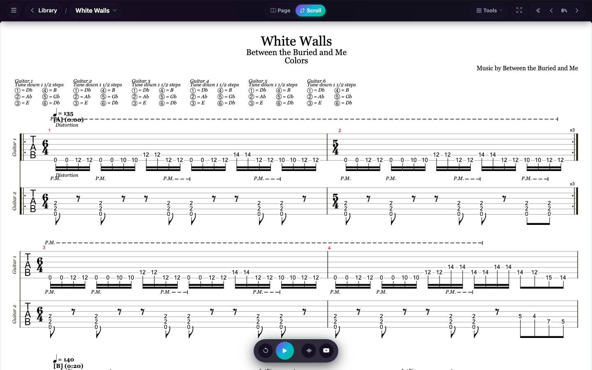
Two Ways to Read
Continuous scroll or book-like pages
Switch modes at any time, on any file. On a touch screen, pinch to resize the sheet.
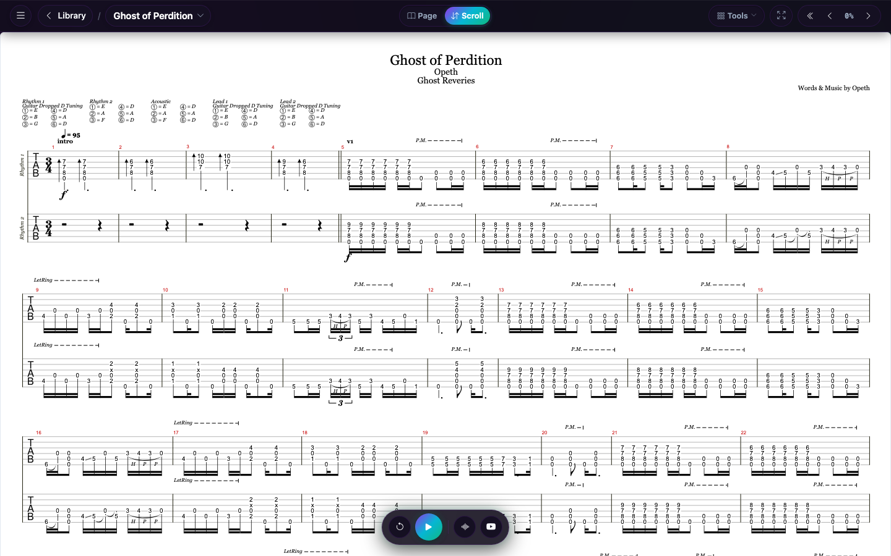
The score scrolls vertically and shows your progress. Use it to learn a song section by section.
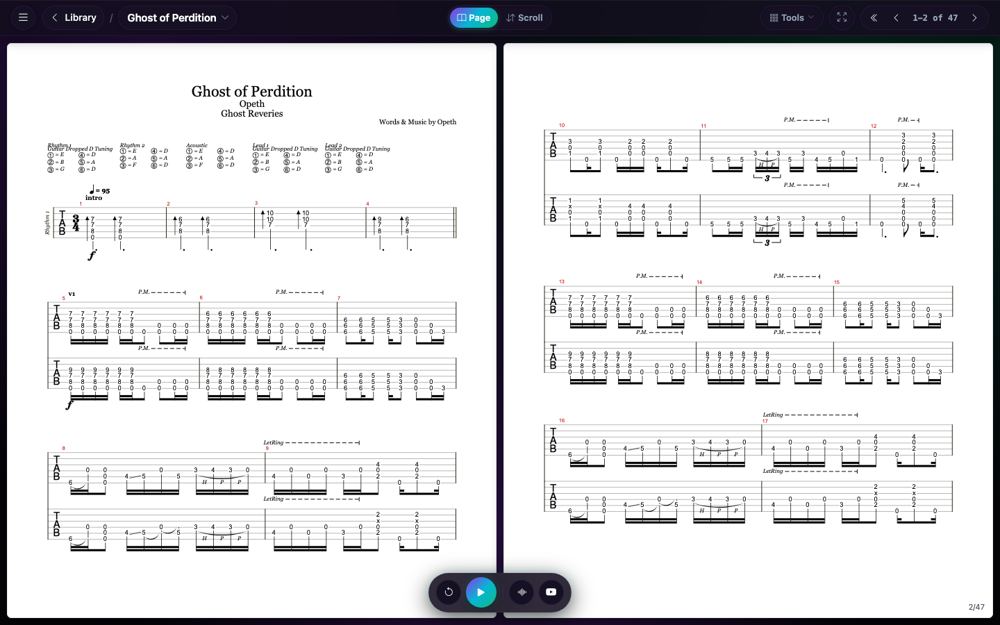
The score reads like a book. You see one page on a phone and two side by side on a wide screen. You can advance one page or two at a time.
Intuitive Floating HUD
A floating top bar that stays out of the way
When you open a Guitar Pro tab or PDF, the floating top bar gives you navigation, score layout, tools, and page controls in one place.

See the Notes
Follow each note on a fretboard
While a Guitar Pro tab plays, the virtual fretboard lights up the notes in the current beat. Press F to show or hide it.
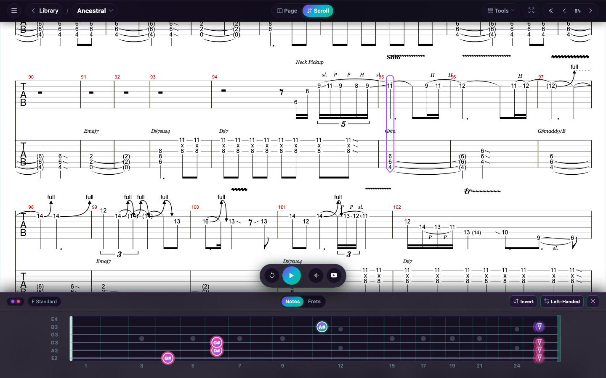
Hear Every Track
Play along with SoundFonts or YouTube
The built-in SoundFont synth plays the tab without an internet connection. A YouTube panel plays the original recording or a backing track above the tab.
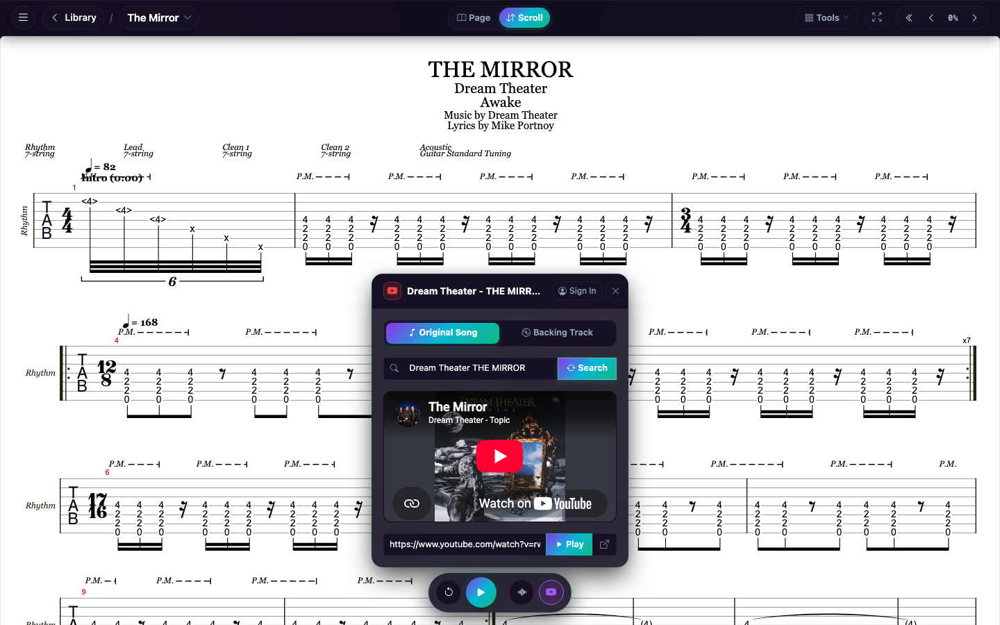
Choose the SoundFont synth or link a YouTube backing track.
Practice at your own tempo
Play Together
Jam on the same page, on your local network
One person hosts a session in a native MajesticTab app. Everyone else joins from the app or from a web browser on the same network. Playback position and YouTube stay in sync.
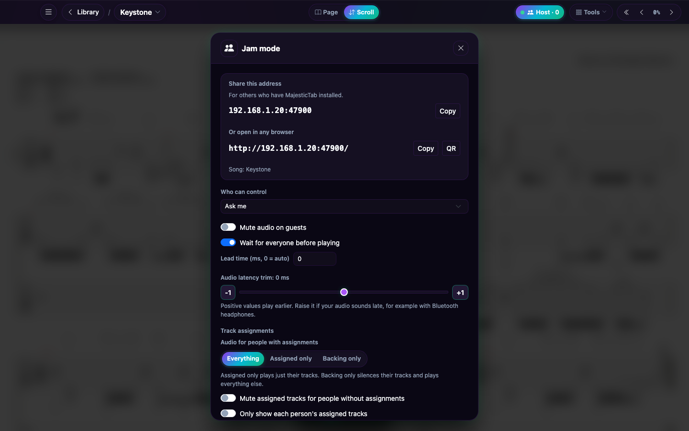
Hosting needs a native app.
Tune and Learn
Tuner, tuning adapter, and chord library
Check your tuning, fit a tab to your guitar, and look up chords and scales without leaving the app.
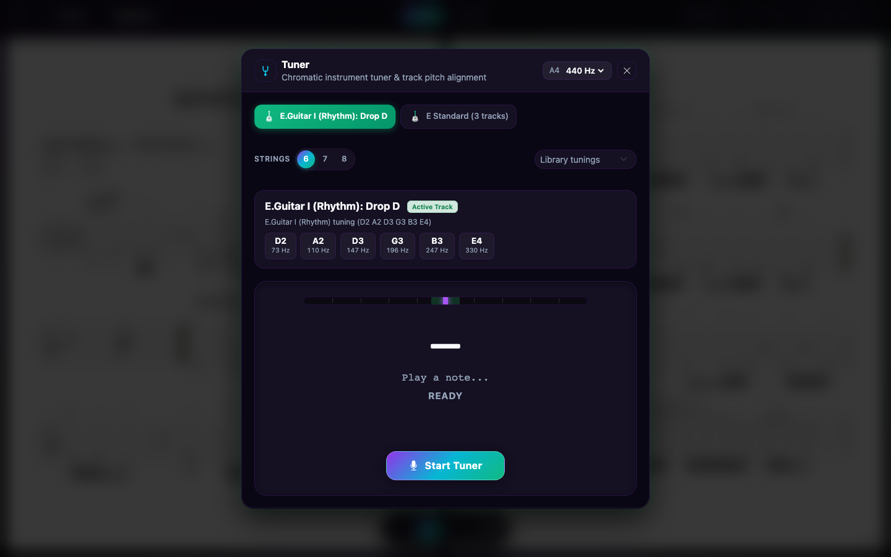
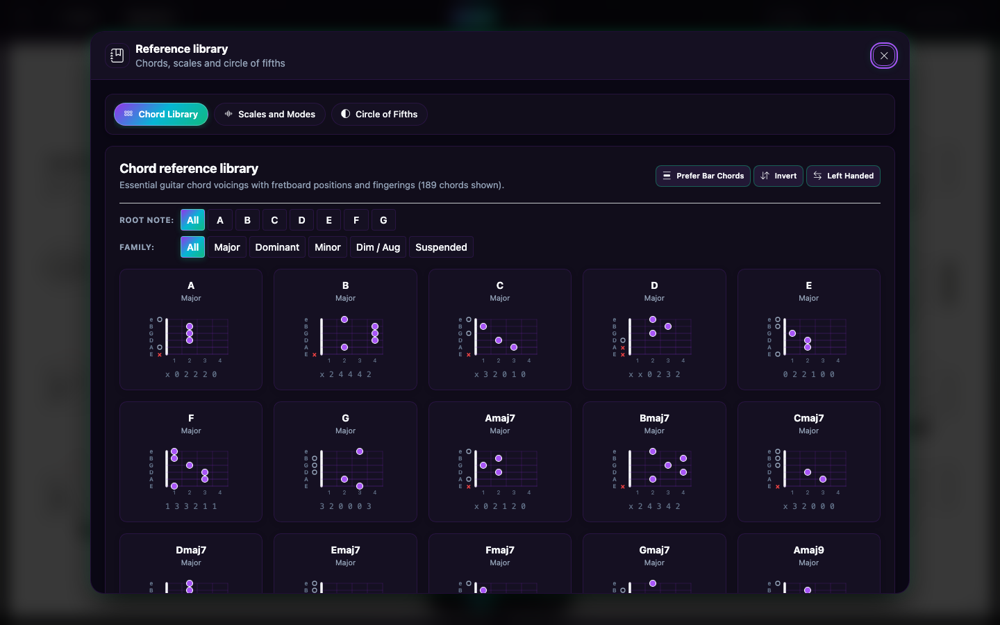
Library and Your Data
A tab library that organizes itself
Add Guitar Pro and PDF tabs to MajesticTab. The library groups songs by artist and album, adds MusicBrainz metadata, and backs everything up in one file.
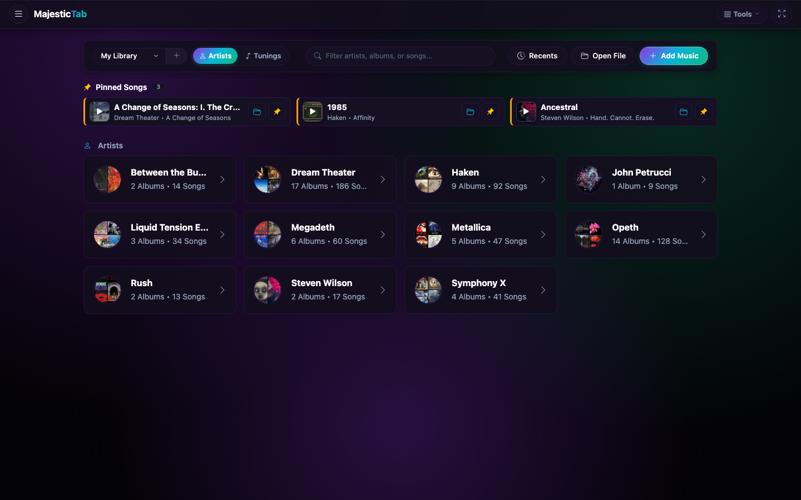
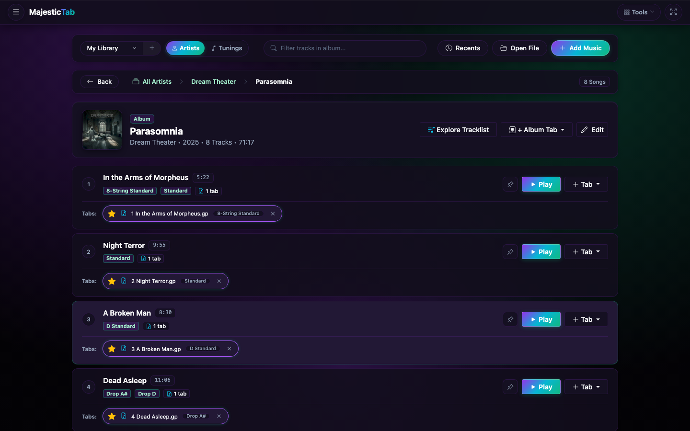
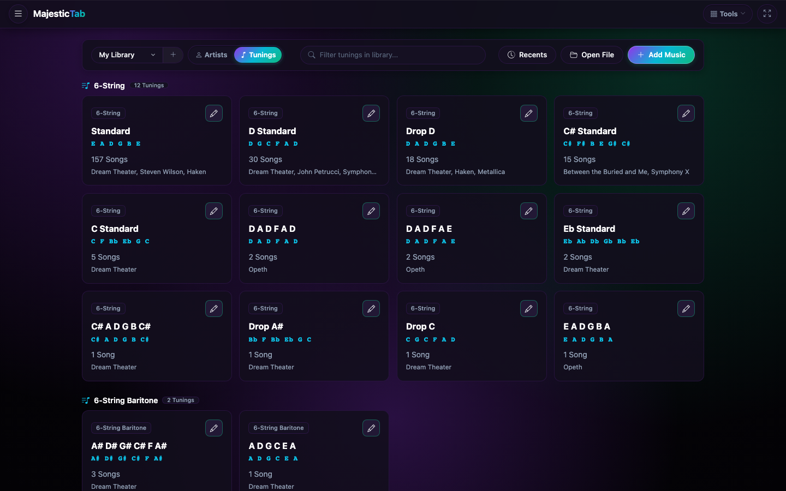
.mtbackup file.
Open tabs from where they live
MajesticTab has no subscription and no required cloud service. You choose where your tabs come from and where your backups go.
Local Device
Offline-FirstFiles on your computer, phone, or tablet
Open tabs from your device. MajesticTab supports Guitar Pro (.gp, .gp3–.gp5, .gpx), text tabs, and PDFs. Tabs stay on your device unless you choose to back them up.
Google Drive
Cloud SyncYour own Google account
Connect your Google Drive account. You can browse folders, open scores on any of your devices, and save full-library .mtbackup archives to your drive. A progress bar shows each backup.
Tab Downloader
Collect TabsSearch tab sites inside the app
Search Songsterr and classtab without leaving the app. MajesticTab adds each downloaded tab to your library with album metadata, tuning, and track details.
Built for Practice
Less setup, more playing
Notation editors are made for writing music. MajesticTab is made for reading and practicing it, with extra tools for PDF tabs.
Open and go
Pick a PDF, a Guitar Pro file (GP, GPX, GP5, GP4, GP3), or a text file. You don't need an account or a project.
Fills your screen
MajesticTab trims margins and scales the notation to your display, so you see more music per screen.
Export to PDF
Save what you see as a printable A4 PDF to print, share with bandmates, or open on another device.
Condense PDF EXPERIMENTAL
For multi-track tab PDFs, MajesticTab finds the staves that have notes, drops the empty ones, and redraws the groups to shorten the PDF.
Hands-Free Control
Gamepad and Bluetooth page turner support
Keep both hands on your instrument. Navigate scores, turn pages, and practice seamlessly with game controllers, foot pedals, or your handheld Steam Deck.
Controllers, Foot Pedals & Steam Deck
MajesticTab connects directly to the W3C Gamepad API with full native support for Xbox controllers, DualShock/DualSense, 8BitDo gamepads, and Steam Deck handhelds, as well as Bluetooth foot pedals (like AirTurn, PageFlip, and Donner).
- LB / RB Page Turn
- LT / RT Analog Scroll
- Y Zen Mode (Hide HUD)
- A / B Play/Pause & Back
- ← / → Prev / Next Page
- PgUp / PgDn Prev / Next Page
- Space Play / Pause
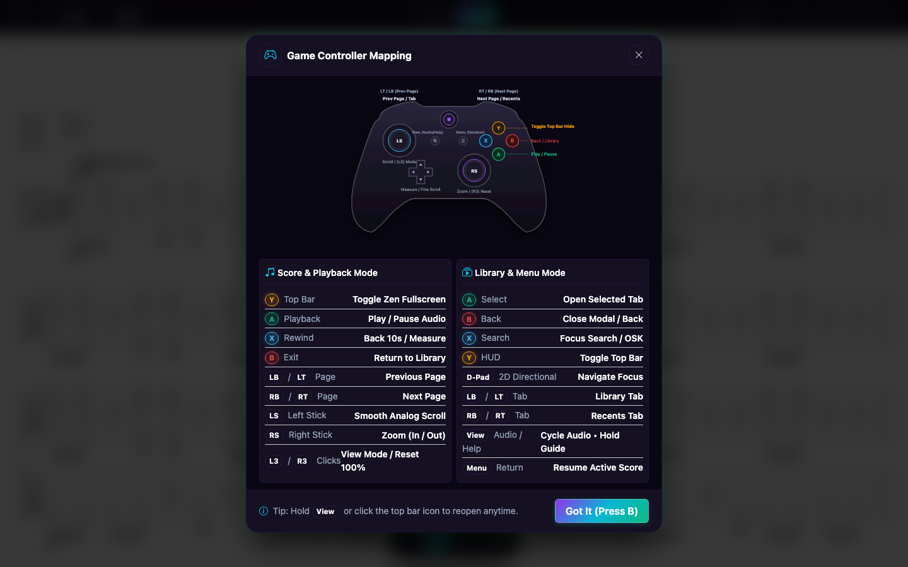
Interactive controller guide overlay accessible anytime with your controller or keyboard shortcuts.
Visual Finishes
Guitar-inspired themes
Color schemes inspired by iconic electric guitar finishes and bursts, with Mystic Dream as the default.
Dynamic UI Colors
Choose from vibrant color bursts and metallic finishes that reskin the entire interface to match your style.
Mystic Dream
Signature shift
Purple Nebula
Deep cosmic burst
Red Nebula
Vibrant ruby flame
Cerulean Paradise
Tropical aqua burst
Blue Pearl
Shimmering metallic
Dark Side
Monochrome stealth
Ember Glow
Warm flame maple
Snow White
Gloss arctic & black
Tab Sheet Styling
Choose how your sheet music notation renders independently from your UI theme. Perfect for switching between crisp paper contrast and dark stage lighting:
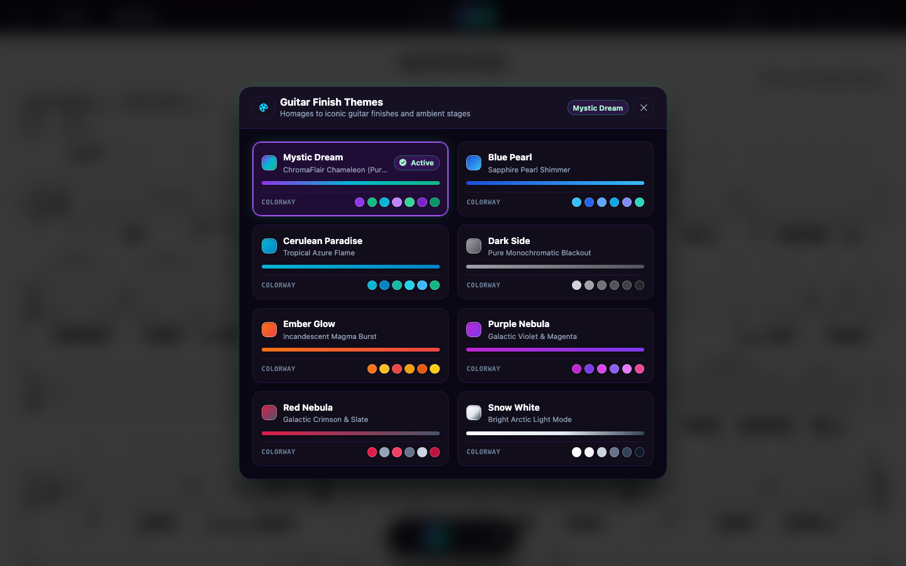
Open Source
Free, open source, and private
MajesticTab is MIT licensed. You can read the code, fork it, and send changes back.
Free
No subscription, ads, or paywalled features.
Open source
MIT licensed. Read it, fork it, improve it.
Works offline
The native apps don't need an internet connection, so your tabs are ready on stage or in the rehearsal room.
Files stay on your device
MajesticTab processes your files on your device and doesn't upload them. Read the privacy policy.
MajesticTab builds on AlphaTab for Guitar Pro rendering and playback, PDF.js for PDFs, and PitchCraft for the tuner.
Cross-Platform
One app on your devices
The native apps run offline and add features such as hosting Jam sessions and the tab downloader. The web version runs the same app in a modern browser.
macOS
Disk image (.dmg) for Apple Silicon and Intel.
The app is not notarized. After dragging it to Applications, run this in Terminal once, or macOS will say it is damaged:
xattr -cr /Applications/MajesticTab.app
Linux and Steam Deck
Flatpak bundle (.flatpak) with Steam Big Picture artwork.
iPhone and iPad
Add the web app to your home screen, or sideload the native app with SideStore, AltStore, or LiveContainer.
- Open the app in Safari
- Tap Share
- Choose Add to Home Screen
All downloads are published on GitHub Releases. MIT licensed.